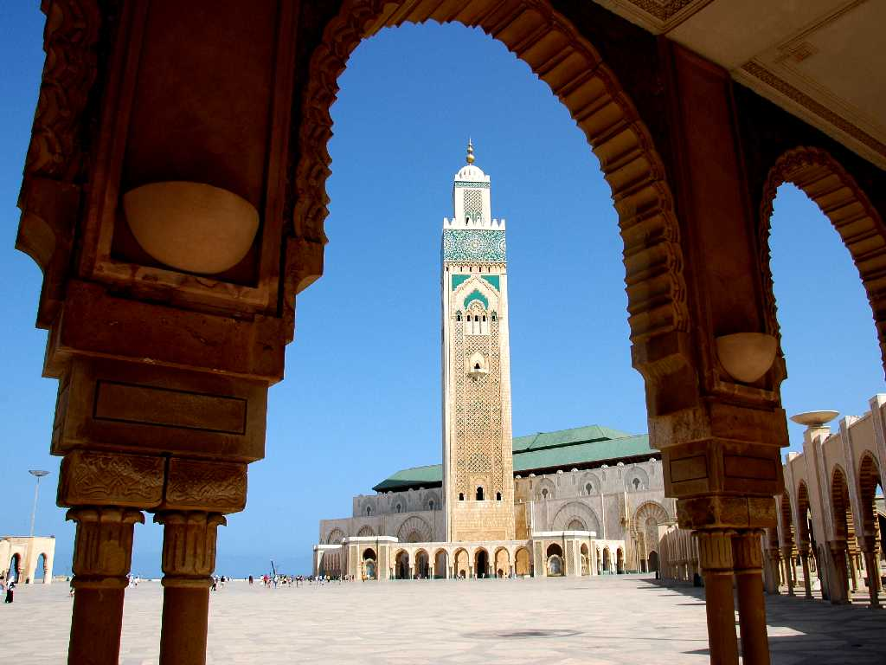
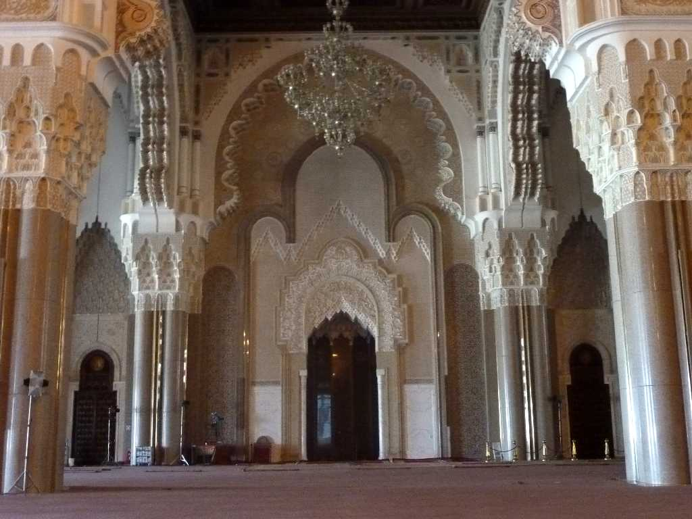
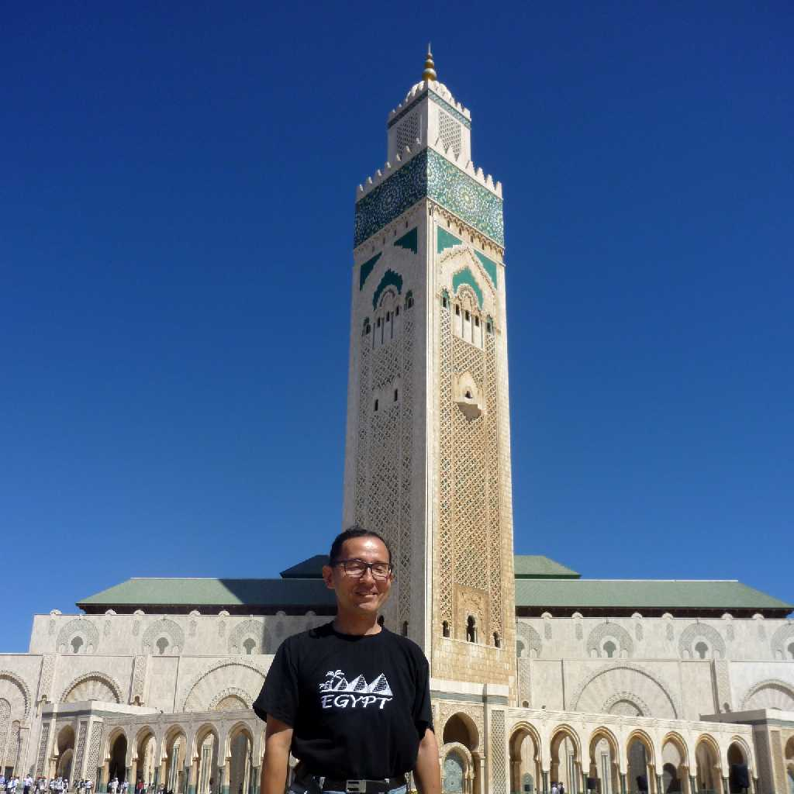
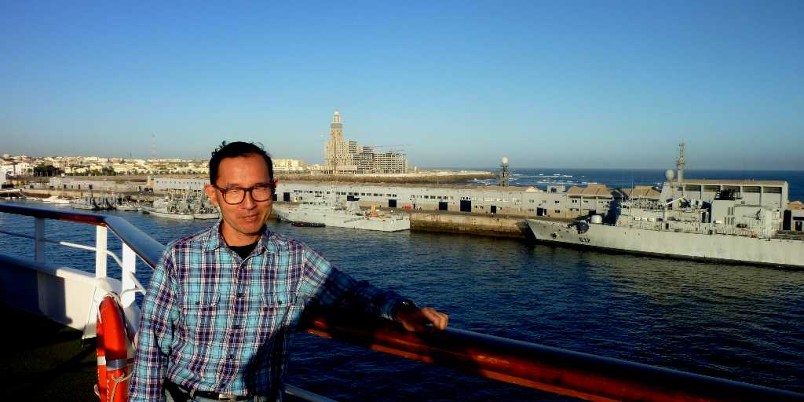
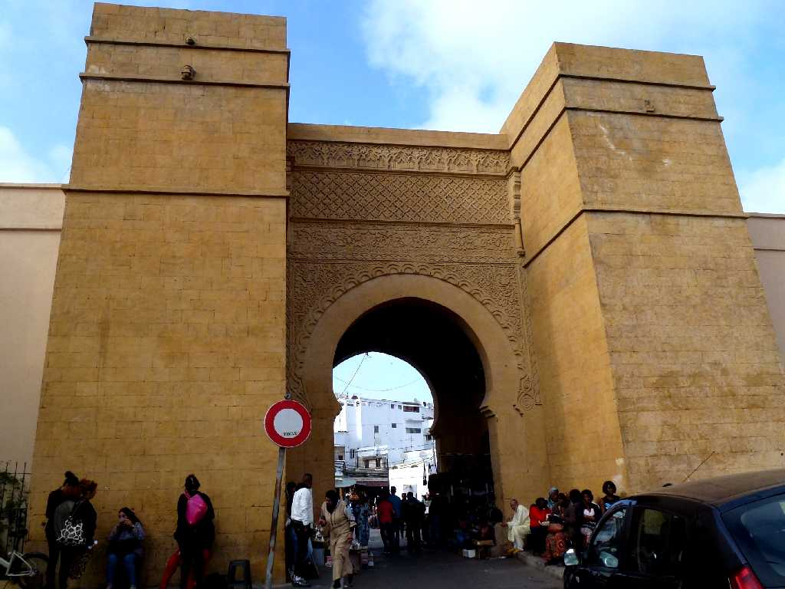
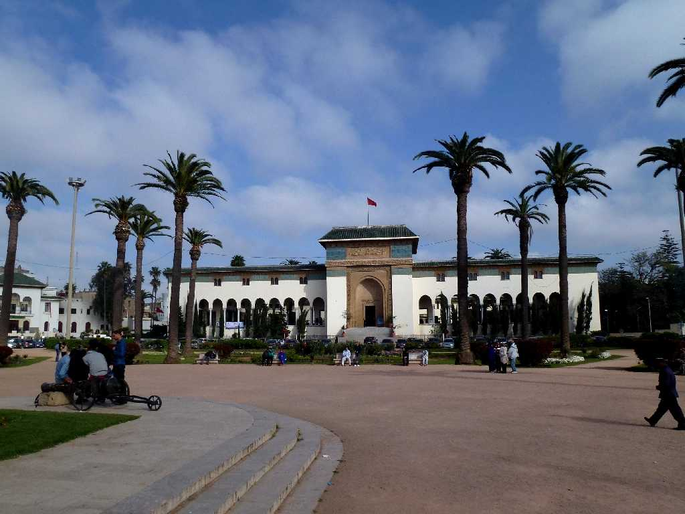
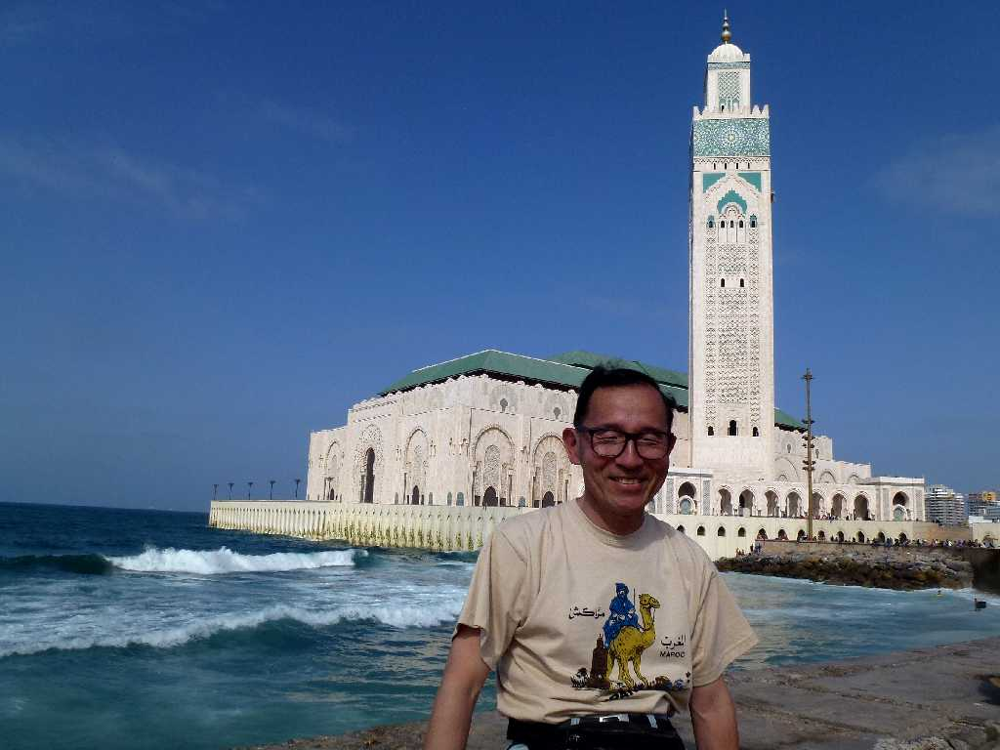

Mosque Hassan Ⅱ Casablanca
スペイン語で白い(casa)家(blanca)を意味するモロッコの商業金融の中心都市 紀元前１０世紀にペルベル人が定住し紀元前７世紀にはフェニキア人と紀元前３世紀にはローマ人と交易を行った港町として栄え１５１５年ポルトガル人により再建された

Mosque Hassan Ⅱ
高さ２００ｍのミナレットが美しいハッサンⅡ世モスクはモロッコ最大のモスクでモロッコ唯一異教徒が入れるモスクである

September 9 2010 Mosque Hassan Ⅱ

September 9 2010 SS Oceanic in Casablanca Port

Bab Marrakech Medina Casablanca
モロッコ周遊３,０００ｋｍバスの旅で世界一周クルーズ以来４年ぶりのカサブランカ再訪問

Mohammed Ⅴ Square Casablanca
モロッコが１９５６年にフランスから独立したときのムハマド５世王の広場

March 19 2014 Mosque Hassan Ⅱ